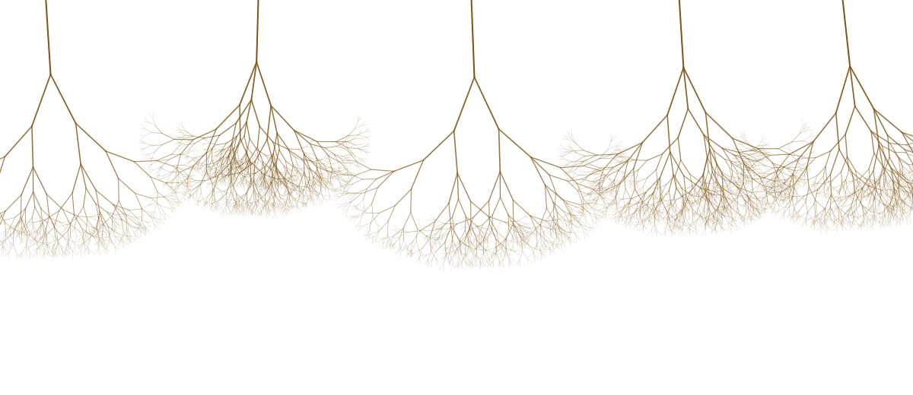
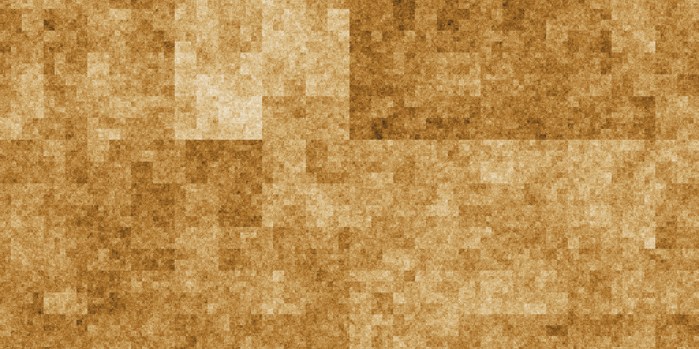
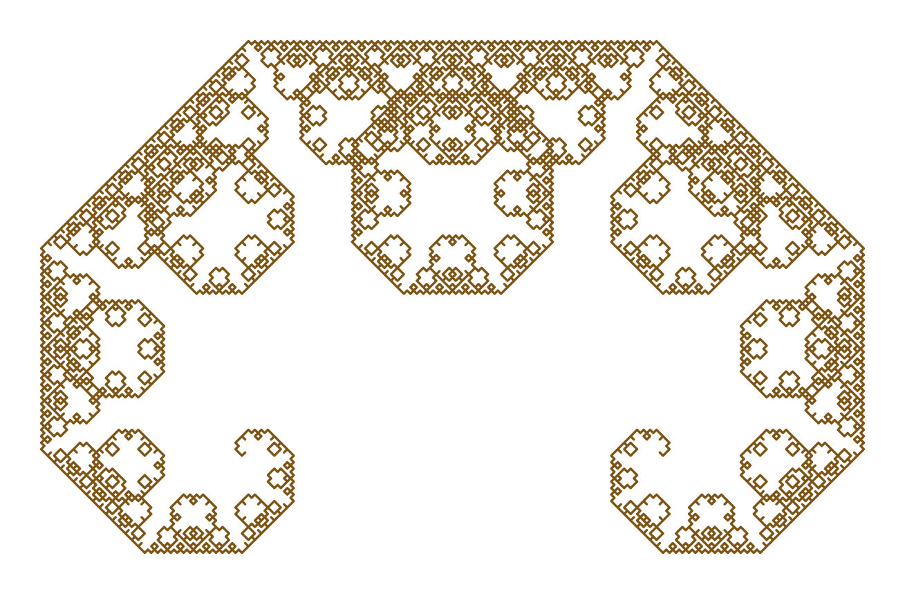
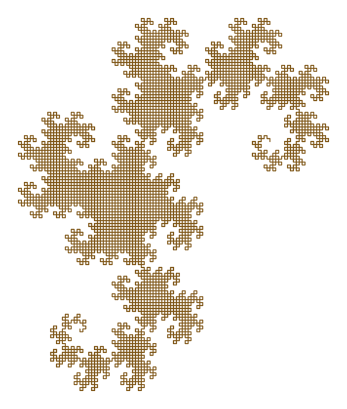
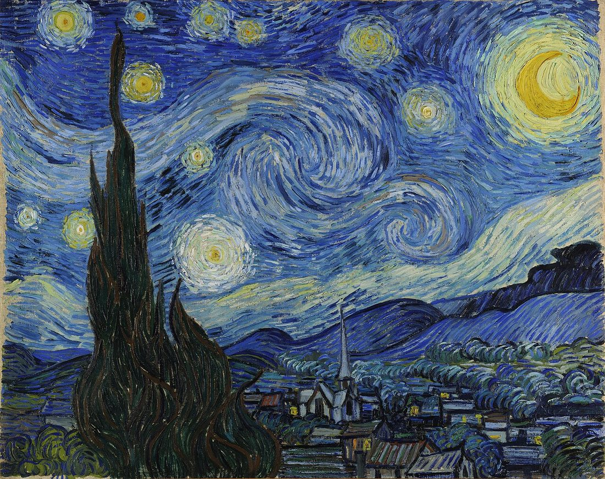

Hierarchical Symmetry Selects Log-Poisson Cascades
Under review · Journal of Statistical Physics
Turn on a tap, watch smoke climb, or look down at a storm from orbit, and the same thing is happening — energy poured in at a large scale, breaking into ever-smaller swirls until it dies away as heat. For a hundred years physicists could describe the shape of that breaking in fine detail, yet could not say why it takes that shape and not some other. It comes down to a single symmetry of the cascade — and to how little room that symmetry, once it is stated exactly, turns out to leave.
A reader's companion to E. M. Freeburg's 2026 theorem on hierarchical symmetry in multiplicative cascades. It explains the result and its context in plain terms while staying faithful to the paper's scope: the formal proof applies within the standard i.i.d. multiplicative cascade model used to study intermittency.

The problem
It is the last great unsolved piece of the physics of ordinary things — air, water, weather — and it hides in plain sight. Stir a fluid hard enough and it stops sliding in smooth sheets and breaks into whirls: big ones shedding smaller ones, those shedding smaller ones again. Physicists call this a cascade. In 1922 the meteorologist Lewis Fry Richardson caught it in four lines, better than any equation:
In 1941 the Russian mathematician Andrey Kolmogorov turned the rhyme into a theory.1 His move was to ask not where the energy is, but how much of it lives at each size — and to assume that, deep in the cascade, the answer depends on the size alone. Fixed numbers fall out of that one assumption: the scaling exponents, which say precisely how the typical swirl weakens as you look at finer and finer scales. If the cascade is perfectly even, every swirl passing energy down in the same tidy proportion, those exponents line up along a clean, straight line — the same for every turbulent flow. It was a landmark. It was also, as the decades showed, incomplete.
But real turbulence is not even, and that straight line bends: the high moments — the rare, violent events — fall below the clean prediction. The energy does not spread itself politely across the fluid; it concentrates. Most of the flow drifts along calm while the violence collects into rare, thread-thin filaments. That downward bend is the fingerprint of intermittency, and it turned a solved problem back into an open one.
By the 1960s the picture had both a shape and a flaw, and the open question had sharpened. It was no longer how fast energy cascades but how unevenly: each time a larger eddy hands its energy to smaller ones, the intensity is multiplied by some random factor, and everything still unexplained — the failure at the extremes, the filaments, the bursts — comes down to one missing quantity, the distribution of that factor. Pin down that single distribution and the rest of the story follows from it.
Background
The equations governing fluid motion are written down (Navier, 1822; Stokes, 1845).2 Turbulence is the regime in which they cannot be solved — the cascade is the empirical picture of that regime.
Lewis Fry Richardson gives the picture its language: energy tumbling from big whirls to small. A vision, not yet a mathematics.
Andrey Kolmogorov derives the clean, even cascade (1941), then proposes the missing distribution is log-normal, the bell curve's multiplicative cousin (1962). It fits roughly; the extremes are off.
Benoît Mandelbrot recasts the cascade as a fractal object — intermittency as the cascade concentrating onto a thin, self-similar set. The geometry of the violence comes into focus.
Zhen-Su She and Emmanuel Lévêque stop guessing the distribution and instead posit a symmetry the hierarchy must obey. Out falls a different law — log-Poisson — matching the data closely, extremes and all; Bernard Dubrulle reaches the same law independently that same year. A year on, She and Edward Waymire (1995) recast it as a quantized energy cascade, the discrete-event picture that gives the law its name. It is a physical argument, not a proof.
E. M. Freeburg states the She–Lévêque symmetry as a single clean rule and proves it does not merely allow log-Poisson but forces it: no other distribution can satisfy the rule. The central argument is formalized and checked by machine, down to a handful of standard logical axioms.
The conjecture
For decades the chase went straight at the distribution: guess a law for that multiplier, then test it against the data. In 1994 Zhen-Su She and Emmanuel Lévêque tried the reverse. Rather than guess the law, they asked what symmetry the hierarchy of scales must obey — what fixed relation has to hold between one degree of violence and the next — and let the distribution fall out of the symmetry.3 The wager was that the deepest question about turbulence was not which law but what constraint. Two very different answers were now on the table:
The natural guess if intensity is shaped by many small independent factors multiplying together. Smooth and familiar — and wrong about the rare, violent extremes that matter most.
Treats intensity as knocked down by discrete, countable events — count the hits a region took. Fits the extremes. The law the symmetry pointed toward.
In real turbulence the most violent structures are thin vortex filaments — threads of concentrated spin, living on a thin set: a Cantor dust, where almost everything has been removed and only a sparse, intense remainder survives. The log-Poisson theory carries a single number for the geometry of that most-singular set — its codimension — and for turbulence it is set to two:4 a one-dimensional thread is missing two of the three dimensions around it.
And there it sat for three decades. The symmetry plainly allowed log-Poisson, and the fit was the best anyone had — but no one had shown it demanded log-Poisson. A close fit is not a proof: the constraint might be merely consistent with the law while quietly permitting a dozen others. What was missing was a proof of necessity.
The result
That proof is what the result supplies.5 Working inside the standard model of intermittency — an i.i.d. multiplicative cascade, where a conserved quantity is split by independent random factors down the scales — it takes the She–Lévêque symmetry, sharpens it into a single clean rule on the cascade's scaling exponents (the paper's axiom A1), and settles the question in the strongest direction there is: the rule does not merely allow log-Poisson — it forces it, and a classification rules out every rival multiplier law. A stability result adds that an approximate symmetry yields an approximately log-Poisson cascade, drifting by no more than a bounded amount. Within that model the fit was never a coincidence; it was the only outcome the symmetry permits. The symmetry itself is an assumption about nature, tested against data, not read off the fluid equations: the theorem works inside the well-established phenomenological cascade picture, and whether real Navier–Stokes turbulence obeys it closely enough for the conclusions to transfer directly remains an empirical and modeling question. What the theorem settles is what must follow once the symmetry holds.
Three properties make it more than a tidy result.
The symmetry and the law are the same fact stated two ways. Have one and you have the other, with every parameter readable from the data.
If the symmetry holds only approximately, the law is only approximately log-Poisson — by a precise, bounded amount. Real, noisy data cannot fall through a crack.
For thirty years log-Poisson was the best answer going. She, Lévêque, Dubrulle and Waymire built a strong physical and heuristic case for it — but it remained an answer someone had chosen, a model that happened to fit. What was missing was a rigorous characterization: a proof that the symmetry leaves no other option. The result supplies it — classification, uniqueness and stability together — and the law stops being something a theorist proposes and the data tolerates, becoming the single solution the constraint allows, the way π is not a good model of a circle but the only ratio a circle can have.
The mechanism
How can a single symmetry rule out every distribution but one? The mechanism is gentler than the result sounds. Sort every structure in a turbulent flow by how violent it is: a vast calm background, then rarer, stronger swirls, then rarer-still, fiercer filaments, on up a ladder of intensity. The hierarchical symmetry — the hierarchy of the title, the paper's axiom A1 — says just one thing: the rule carrying you from each rung of that ladder to the next is the same rule, all the way up. And that rule is a contraction. Apply it again and again and the rungs are drawn toward one limiting pattern, wherever you start — the Banach fixed-point principle,6 the same thing that makes the Lévy C curve the single shape its folding rule can settle into.

Fixing that limiting pattern does something surprising: it forces the cascade's multiplier to be bounded — there is a hardest kick the cascade can deliver, and nothing exceeds it. And a bounded quantity is pinned down completely by its sequence of averages, its moments: rescaled to the unit interval, its law is the only one with those moments — a Hausdorff moment problem, and the actual engine of the uniqueness proof. The symmetry fixes every one of those moments — so it fixes the whole law. That settles how many laws are possible, exactly one, before anyone has asked which.
Which one, and why "Poisson"? To see the survivor, look within the natural family of laws built up from many small independent steps — the infinitely divisible laws. A theorem of Lévy and Khinchin7 sorts every one of them into three ingredients: a steady drift, a smooth Gaussian (bell-curve) part, and a Poisson part that counts discrete, independent shocks. The symmetry forces the Gaussian part to vanish; what is left is pure Poisson. That is the whole of the "log-Poisson" name — how singular a patch of fluid becomes is set by how many discrete shocks it took, and a tally of rare, independent hits is exactly what a Poisson law describes.
Generality
Notice what the argument never touched: not water, not air, not a single fact about vortices. It used only that the system is a cascade — a conserved quantity handed down and split across nested scales — and that the one symmetry holds. Its reach is therefore as wide as that description, and cascades are not only in fluids. Wherever a quantity is repeatedly divided across nested scales — rainfall through the sizes of storms, the branching of blood vessels, perhaps the swings of a market — the same skeleton may be present. A law about one cascade becomes a candidate law about the others: to be tested, not assumed.
An older idea sits underneath this. For centuries, thinkers who sensed a single pervasive organizing force in nature reached for a substance to carry it — an all-pervading aether, a cosmic life-energy. They were pointing at something real, but in the wrong category. The organizing thing was never a material to be bottled: it is a law of form — a statistical symmetry that any deep cascade is compelled to obey.
What is proven is the mathematics: for genuine cascades, the symmetry forces the one law. What is observed is narrower — the law reads cleanly on real turbulence, the system it was born from. Whether it reads on a market, a forest, or a heartbeat is a separate question, answered one domain at a time, and some, like the human heartbeat, prove too gentle a cascade to register. The mathematics is general; the reach is earned.
Application
Grant the mathematics its home ground — a real, deep cascade — and a new kind of question opens up. Once there is a single form a healthy cascade must take, that form is a fixed reference: a true zero, the thing any ruler needs. Against it one could, in principle, ask as a single number how far a given cascade has drifted from the form it would hold if nothing obstructed its flow.
This is what we mean by health of form: a standard for whether a system is in good order, set not by an observer's expectations but by the system's own proper shape. Picture a jet engine whose airflow has begun, invisibly, to stiffen at the smallest scales — its cascade drifting from the proven form long before any temperature or pressure gauge twitches. Most diagnostics watch averages, levels, setpoints; this would watch whether the structure of the fluctuations across scales is still intact. The theorem supplies the fixed reference such a gauge would need; the instrument that would read it — the statistics of estimating that drift from finite, noisy data — is a separate theory, not yet built.
Lineage
The wish underneath health-of-form — to know the form a thing keeps when nothing is impeding it — is far older than any cascade. Aristotle held that each thing has a form it strives toward, and that health is simply nearness to that form. The biologist D'Arcy Thompson argued that living shapes are written by the mathematics of growth rather than by accident. Mandelbrot showed that roughness itself — coastlines, clouds, turbulence — has an exact geometry. Each was reaching, in the language of his own century, for one idea: that beneath the particulars of any single case there is a rule the thing is meant to follow.

Even a painter seems to have reached toward it. In June 1889, from the window of an asylum at Saint-Rémy, Vincent van Gogh painted The Starry Night. More than a century later, physicists who measured the painting’s luminance and brushwork8 reported scaling behaviors that resemble aspects of turbulent cascades — a striking, much-debated claim. Set the canvas beside the Heighway dragon above and a quieter kinship surfaces: the same curl, nested within itself at every scale — the dragon that self-similarity in its exact, deterministic form, drawn by one folded rule; the night sky its turbulent, statistical cousin, drawn by a hand. Two faces of one grammar, a resemblance we have not found remarked elsewhere. With no equations at all, van Gogh had already drawn it.
What is new is narrow, and it is earned. For one sharply drawn class of systems — deep cascades — the proper form is no longer a metaphor or a lucky fit but a theorem: the symmetry leaves room for exactly one law. And it is only the title, said slowly. The hierarchy is the cascade itself — scale nested inside scale, each rung of intensity standing to the next in one fixed relation. To say hierarchy imposes form is to say that relation does not merely permit a shape; where the cascade runs deep, it compels one. A hundred years after a rhyme about whirls, the rhyme has been given its reason.
